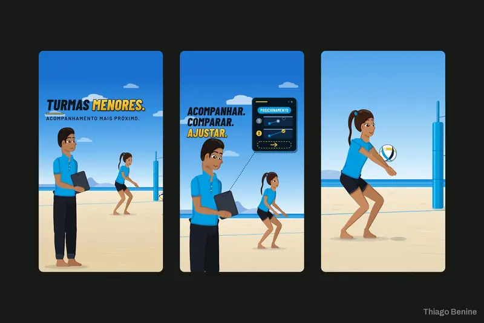
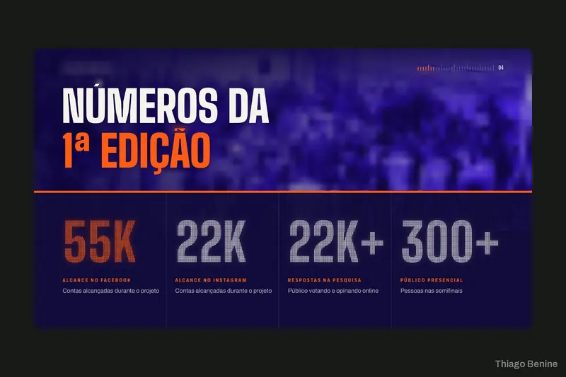

Design
Capa, caixa e novas cenas para livro-jogo
Editorial4 dias 5,0
Ilustrações, catálogos, cardápios, rótulos, capas de livro e design de telas.


Design
Editorial4 dias 5,0
Design
Editorial4 dias 5,0

Design
Saúde4 dias 5,0

Design
Editorial4 dias 5,0

Design
Alimentação4 dias 5,0
Design
Alimentação4 dias 5,0

Design
Nutrição e suplementos4 dias 5,0

Vídeo
Esportes4 dias 5,0

Apresentações
Artesanato4 dias 5,0

Identidade
Presentes personalizados4 dias 5,0

Identidade
Decoração4 dias 5,0

Marketing
Educação4 dias 5,0
Identidade
Moda3 dias 5,0

Marketing
Seguros4 dias 5,0

Marketing
Esportes4 dias 5,0

Identidade
Cultura pop4 dias 5,0

Apresentações
Cultura4 dias 5,0

Apresentações
Carreira4 dias 5,0

3D e CAD
Indústria1 dia 5,0

Identidade
Jurídico4 dias

Identidade
Jurídico4 dias 5,0
Muito atencioso e um excelente profissional. Com certeza farei futuros serviços5,0 na 99Freelas
Apresentações
Editorial3 dias 5,0
Nenhum trabalho com essa combinação.
Tire um dos filtros para ver mais:
Me chame pela 99Freelas. Você recebe a proposta com escopo, prazo e valor fechados antes de começar.
4,98 em 89 avaliações · 99 projetos concluídos